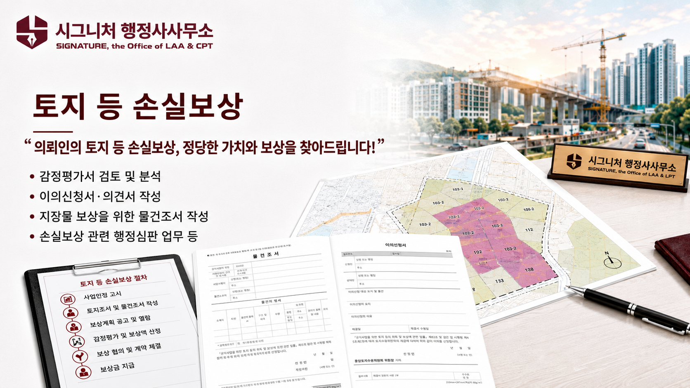
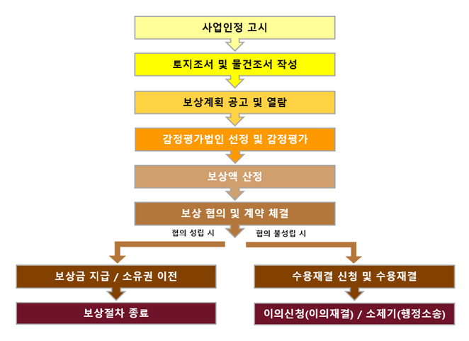
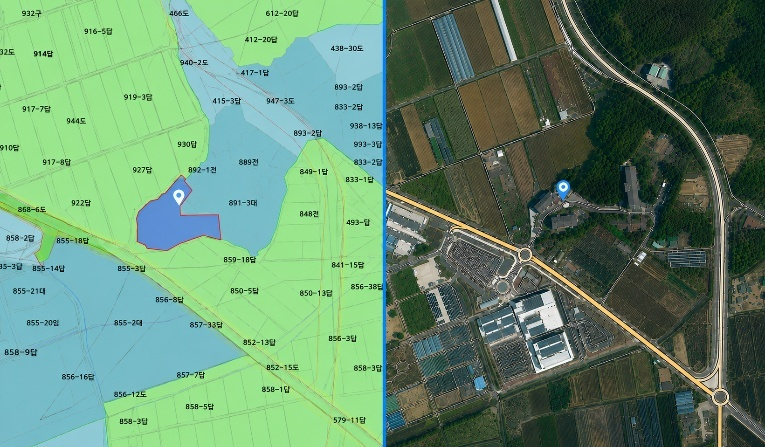

토지 등 손실보상
토지 등 손실보상(이하, 손실보상)의 개요
손실보상이란, 공공필요에 의한 적법한 행정작용에 따른 공권력 행사에 의하여 특정 국민의 재산에 가해진 특별한 희생(손해)에 대해 국민의 사유재산권 보장과 전체적인 공평부담의 견지에서 행해지는 재산적 보상을 의미합니다.
헌법 제23조제3항에 “공공필요에 의한 재산권의 수용·사용 또는 제한 및 그에 대한 보상은 법률로써 하되, 정당한 보상을 지급하여야 한다.”라고 규정하고 있으며, 이 같은 헌법조항을 기초로 하여 전통적인 의미의 손실보상의 근거 법령인 「공익사업을 위한 토지 등의 취득 및 보상에 관한 법률」이 있습니다.

손실보상 관련 법령 및 규정 등
- • 헌법 제23조제3항
- • 공익사업을 위한 토지 등의 취득 및 보상에 관한 법률
- • 국토의 계획 및 이용에 관한 법률/산업입지 및 개발에 관한 법률
- • 도시개발법/도시 및 주거환경정비법/도로법/하천법
- • 감정평가에 관한 규칙/감정평가 실무기준/표준지 조사·평가 기준/토지·영업손실보상평가지침 등
손실보상의 원칙
- • 사업시행자 보상의 원칙
- • 사전보상의 원칙
- • 현금보상의 원칙
- • 개인별 보상의 원칙
- • 일괄보상의 원칙
- • 사업시행 이익과 상계금지의 원칙
- • 개발이익 배제의 원칙
- • 시가보상의 원칙
손실보상의 절차
공공필요에 의한 공익사업을 위해 토지 등의 손실보상은 일반적으로 아래의 흐름도과 같은 절차를 거치게 됩니다.

손실보상의 유형
-
•
토지에 대한 손실보상
- ✓ 취득(수용)하는 토지, 사용하는 토지, 잔여지 등에 대한 보상
- ✓ 일반적인 토지 보상액은 가격시점에서의 현실적 이용상황과 일반적 이용방법에 의한 객관적인 상황을 고려하여 산정
-
•
지장물에 대한 손실보상
- ✓ 건축물·입목·공작물과 그 밖에 토지에 정착한 물건에 대하여는 이전에 필요한 비용으로 보상
- ✓ 건축물 보상은 건축물의 구조·이용상태·면적·내구연한·유용성 및 이전 가능성 그 밖에 가격형성에 관련되는 제 요인을 종합적으로 고려하여 평가한 금액으로 보상액을 결정
- ✓ 1989년1월24일 이전에 건립된 무허가 건축물은 이주대책 대상에 포함시켜 보상
- ✓ 수목보상은 사업시행지구 밖의 지역으로의 이전비용(굴취비, 운반비, 부대비용 등)으로 보상
- ✓ 과수 그 밖에 수익이 나는 나무 또는 관상수에 대하여 수종, 규격, 수령, 수량, 식수면적, 관리상태, 수익성, 이식가능성 및 이식의 난이도 그 밖에 가격형성에 관련되는 제 요인을 종합적으로 고려하여 보상 (단, 임야 상의 소나무 및 잡목 등 자연수목은 경제적 가치를 인정하지 않고 토지보상에 포함하여 평가)
-
•
영업의 손실보상
-
✓
손실보상 대상 영업
- - 사업인정고시일등 전부터 적법한 장소에서 인적, 물적 시설을 갖추고 계속적으로 행하고 있는 영업
- - 사업인정고시일등 전에 관련 법령에 의한 허가 등을 받아 그 내용대로 행하고 있는 영업
- - 무허가건물에서 사업인정고시일 등 1년 전부터 사업자등록을 한 임차인
- ✓ 휴업 손실보상 - 공익사업의 시행에 의해 영업장소의 이전으로 인한 영업손실은 휴업기간의 영업이익과 영업장소 이전 후 영업이익 감소액에 휴업기간 중 영업용 자산의 감가상각비, 유지관리비와 휴업기간 중 필수근무 최소 인원에 대한 인건비와 영업시설·원재료·제품 및 상품의 이전비용 및 감손상당액, 이전광고비 및 개업비 등에 소요되는 부대비용 등을 합한 금액으로 보상 평가 (휴업기간은 4개월 이내로 하되, 이전시킬 영업장소의 고유한 특성이 인정되는 경우 실제 휴업기간으로 하나 2년 초과 불가)
- ✓ 폐업 손실보상 - 2년간의 영업이익(또는 개인영업소득)에 영업용 고정자산, 원재료, 제품 및 상품의 매각손실액을 더한 금액으로 보상
-
✓
-
•
농업의 손실보상
- ✓ 공익사업지구에 편입되는 농지에 대해 연간 농가평균 단위 경작면적당 농작물 총수입 또는 실제소득의 2년분을 곱하여 산정한 금액으로 보상
- ✓ 보상 제외 대상 - 사업인정 고시 이후 농지로 이용되는 토지, 일시적으로 이용되고 있는 토지, 타인 소유의 토지를 불법 점유하여 경작하고 있는 토지, 농민이 아닌 자가 경작하고 있는 토지
-
•
권리의 보상
- ✓ 광업권, 어업권은 투자비용, 예상수익 및 거래가격 등을 고려하여 책정한 적정가액으로 보상
-
•
기타 보상
손실보상 컨설팅 서비스 업무
-
•
이의신청서 작성 대행
- ✓ 보상계획 및 열람 공고와 관련하여 토지조서와 물건조서를 열람하고 해당 조서의 내용에 이의가 있는 경우 열람기간 내 서면으로 이의신청서를 제출합니다.
- ✓ 이의신청서를 작성하기 위해서는 정보공개청구를 통하여 감정평가액의 산출 근거 및 결정 의견 등에 관한 세부정보를 획득합니다.
-
✓
이의신청서 작성 시, 다음 사항에 대하여 검토합니다.
- - 표준지 선정의 적정성 및 오류 여부
- - 개별요인(가로, 접근, 환경, 획지조건 등) 비교의 적정성 및 오류 여부
- - 가격시점(기준시점), 시점수정의 적정성 및 오류 여부
- - 보상액의 적정성 및 산출 오류 여부
- - 지역 요인과 기타 요인의 적정 및 오류 여부
- - 최근 거래사례 및 보상 선례 등

-
•
지장물 보상을 위한 물건조서 작성 대행
- ✓ 원칙적으로 사업시행자가 감정평가법인 등을 선정하여 지장물 조사 등의 업무를 진행하는 것이 일반적이지만, 일부 누락 등 이를 불신하는 토지 소유자가 의뢰하는 경우가 있습니다.
- ✓ 이 경우, 누락된 지장물 없이 철저하게 빠짐없이 작성하여 최초 보상협의 시 한 번에 정당한 보상금 수령이 가능하게 할 수 있다는 장점이 있습니다.
-
•
기타 손실보상 관련 행정심판 업무 등
“당신의 땀과 애환이 서린 그 땅, 시그니처 행정사사무소가 정당한 가치와 보상을 찾아드립니다!”
지금 바로 상담 신청하세요!